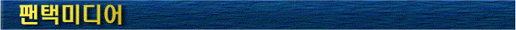

|

|
92년 (주)서두미디어로 출발하여 체신부, 전자통신연구소, 한국통신의 유망중
소기업으로 선정되었으며 화상회의(Video Conference System), 노트북용 PCMCIA,
TOP4, CINE 3, MTV-PRO, 등과 같은 멀티미디어 통합보드기술, 고속의 3차원 멀티
미디어 영상처리 등의 기술개발에 전력을 기울이고 있으며, 97년 2월 (주)팬택
미디어로 상호변경하면서 DSVR(디지털위성방송수신기), CCTV(감시용 카메라)
등과 기술협력 고속정보통신에 박차를 가하고 있는 회사입니다.
|
|
88년 국내 최초로 '그날이 오면' 이라는 게임 개발을 시작으로, 국내 PC게임 개발
자의 대명사로 자리를 굳혀온 미리내 소프트웨어는 주식회사 팬택과 1995년 협
력관계를 맺게 되었습니다. 미리내소프트웨어는 현재 27명의 직원이 RPG, 3D,
아케이드, ON LINE 및 WINDOWS, 교육, 전자/음성 메일 서비스 등 여러분야로 나
뉘어 전문성과 기술축적에 힘쓰고 있으며, 고속의 멀티미디어 영상처리, 3차원
사운드 처리, 고속의 실시간 3차원 영상처리, 고속정보통신에 대비한 온라인 및
네트워크 처리, 음성대화 및 음성인식기술 등의 기술개발에 전력을 기울이고 있
는 회사입니다.
|
- 설립일 : 1994. 7. 18
- 대표자 : 정 재 성
- 전체직원수 : 27명
- 경영이념 : 우리는 마인드 웨어를 창조합니다. (We Create Mindware)
- 회사연혁
- 88. 03
- 92. 05
- 93.
- 94. 03
- 94. 10
- 95. 03
- 95. 03
- 95. 04
- 95. 06
- 95. 07 |
: 한국 최초 게임 제작 '그날이 오면'
: 한국 최초의 IBM PC 게임 '자유의 투사' 개발
: '그날이 오면 3' 및 게임 다수 개발
: 한국 PC게임 개발 협회 회원
: 한국방송공사 방송용 게임 프로그램 제작업체 지정
: (주)팬택 출자 참여 (40%)
: 무궁화위성 발사기념 게임 S/W 개발업체 지정 (한국통신)
: 민간 상업 DB개발업체 지정
: 유망 중소 정보통신기업 선정 (정보통신부 / ETRI / 한국통신)
: 게임 저작 도구 개발업체 지정 (문화체육부) |
- 사업부서
- 게임개발부
- 멀티미디어사업부
- 데이터통신사업부
- 출판부
- 부설연구소
- 제품군
- 망국전기
- 드래곤 투카 3D
- 아마게돈
- 지무신대전 : 네크론
- 풀메탈자켓 1, 2
- 작은 신들의 전쟁
- 으라차차
- 카트레이스
- 나무꾼이야기
- 고룡전기퍼시벌
- 배틀기어
- 인터넷 주소 : www.mirinae.com
- 설립일 : 1985. 02
- 대표이사 : 박 병 엽
- 전체직원수 : 72명
- 회사연혁
- 1985. 02
- 1985. 12
- 1986. 12
- 1992. 02
- 1992. 09
- 1993. 11
- 1996. 08
- 1996. 08
- 1996. 08
- 1996. 11
- 1997. 05
|
: (주)삼신통신 설립
: 유망중소기업 선정
: 정밀도 경진대회 우수상 수상
: 'Tel-Tag (경보기)' 수출 개시
: 컴퓨터용 F.D.D Main PCB Ass'y 생산 개시
: SMT 사업품질 1,000PPM 달성 감사패 수상
: 팩스모뎀 및 LMR PCB Board 생산 개시
: 멀티미디어 보드 생산 개시
: 사이버보이 생산 개시
: PAGER 생산 개시
: (주)팬택전자'로 법인명칭 변경 |
|